ผลิตแผนที่และเอกสารประกอบสำหรับขออนุญาตใช้พื้นที่ก่อสร้างโครงสร้างชลประทาน ตามมาตรฐานและระเบียบของกรมชลประทาน
การก่อสร้างโครงสร้างชลประทาน เช่น ฝายและเขื่อน ต้องผ่านกระบวนการขออนุญาตใช้พื้นที่ตามระเบียบราชการ ซึ่งต้องแนบแผนที่แสดงตำแหน่งและขอบเขตพื้นที่ที่ถูกต้องตามมาตรฐานที่หน่วยงานกำหนด
แผนที่ต่อท้ายหนังสืออนุญาต เล่มที่ 15 ฉบับที่ 18 ลงวันที่ 28 มกราคม 2523 แสดงบริเวณที่จังหวัดแม่ฮ่องสอนได้รับอนุญาตให้ใช้พื้นที่ป่าสงวนแห่งชาติ ป่าแม่ปายฝั่งซ้าย ตำบลผาบ่อง เนื้อที่ 2,500 ไร่ และป่าแม่ปายฝั่งขวา ตำบลปางหมู เนื้อที่ 4,700 ไร่ รวมเนื้อที่ประมาณ 7,200 ไร่ เพื่อประโยชน์ในการดำเนินงานตามโครงการพัฒนาลุ่มน้ำปาย ครอบคลุมอ่างเก็บน้ำและระบบส่งน้ำภายในศูนย์ฯ ลุ่มน้ำปายทั้งหมด
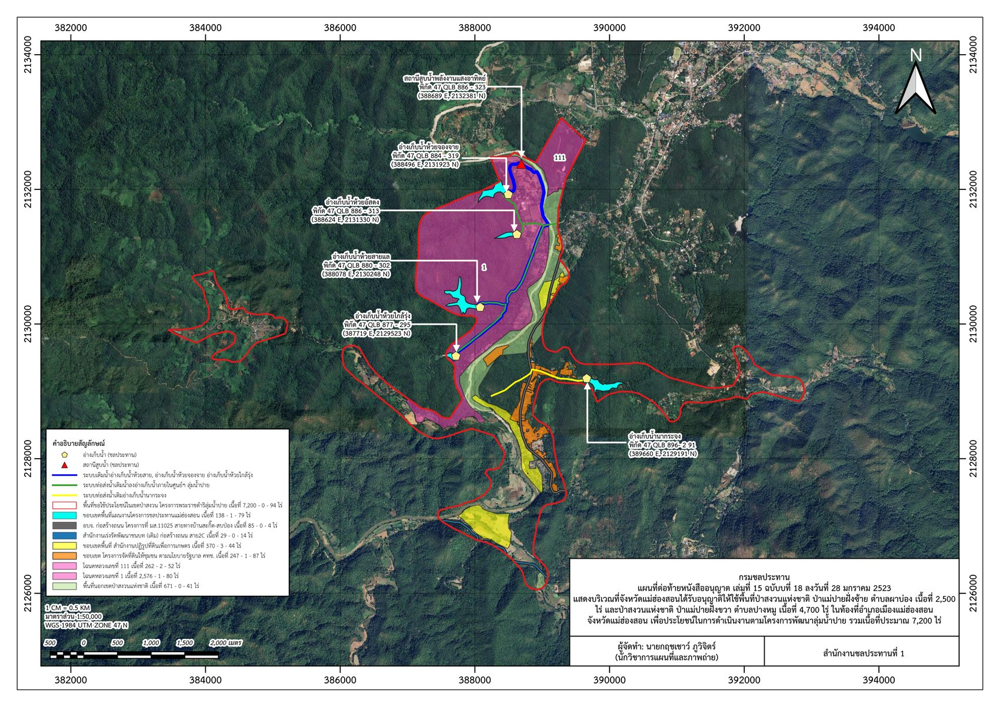
แผนที่ภาพถ่ายดาวเทียมแสดงตำแหน่งฝายถาวร 45 แห่ง ในเขตป่าสงวนแห่งชาติป่าแม่ปายฝั่งซ้าย พื้นที่โครงการพัฒนาป่าไม้พัฒนาพื้นที่สูงแบบโครงการหลวงหนองเขียว ท้องที่ตำบลผาบ่องและตำบลห้วยโป่ง อำเภอเมืองแม่ฮ่องสอน จัดทำเป็นชุดข้อมูล Shapefile ประกอบการพิจารณาโครงการก่อนยื่นขออนุญาตใช้พื้นที่
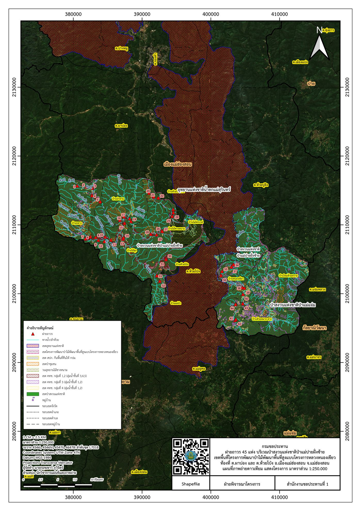
* ผลงานส่วนนี้จะทยอยอัปเดตเพิ่มเติมตามโครงการที่ดำเนินการจริง
แผนที่เสนอประมาณการที่ตั้งโครงการ (หัวงาน) ฝายห้วยน้ำของพร้อมระบบส่งน้ำ พิกัดที่ 47Q MB 135-819 (413590 E, 2181945 N) ท้องที่บ้านซอแบะ หมู่ 8 ตำบลนาปู่ป้อม อำเภอปางมะผ้า จังหวัดแม่ฮ่องสอน จัดทำทั้งแบบซ้อนทับภาพถ่ายทางอากาศและแผนที่ภูมิประเทศ เพื่อประกอบการยื่นขออนุญาตใช้พื้นที่ก่อสร้างฝาย
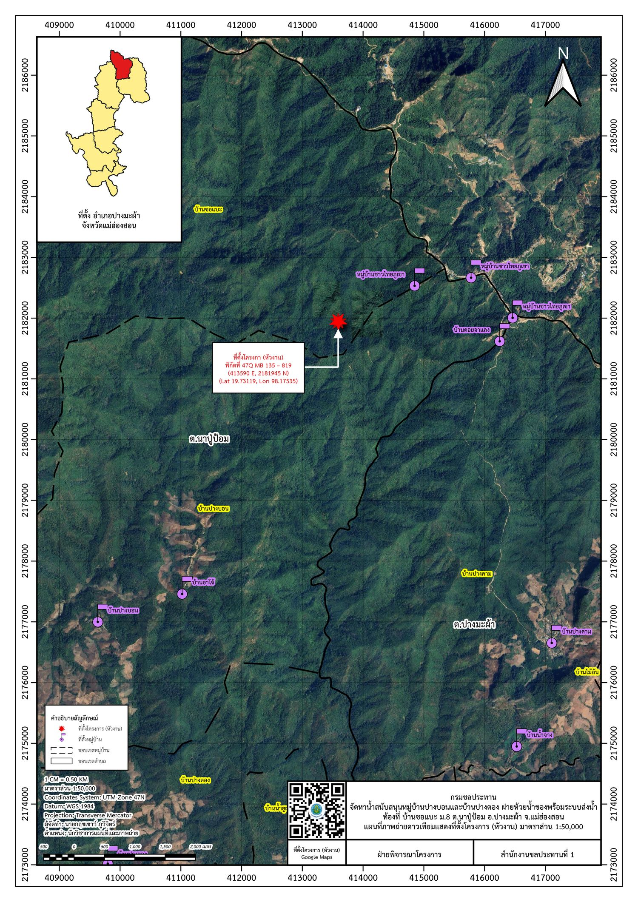
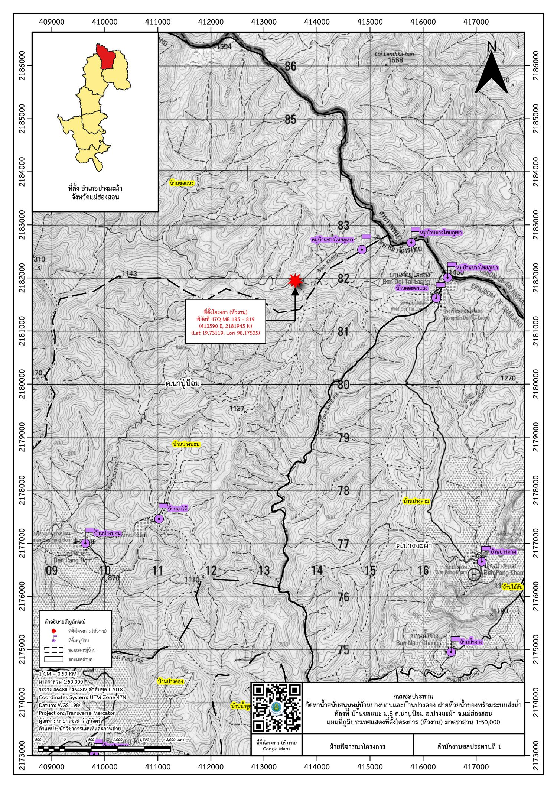
โครงการก่อสร้างสถานีสูบน้ำด้วยพลังงานแสงอาทิตย์ สูบน้ำจากแม่น้ำปายเพิ่มปริมาณน้ำต้นทุนให้อ่างเก็บน้ำห้วยฝายคอ ท้องที่บ้านปางหมู หมู่ 1 ตำบลปางหมู อำเภอเมืองแม่ฮ่องสอน แนวท่อส่งน้ำความยาว 733 เมตร พาดผ่านพื้นที่ 2 ประเภท คือ เขตป่าไม้ถาวรแม่ปายฝั่งซ้าย (พ.ร.บ. ป่าไม้ พ.ศ. 2484) และเขตป่าสงวนแห่งชาติป่าแม่ปายฝั่งซ้าย (พ.ร.บ. ป่าสงวนแห่งชาติ พ.ศ. 2507) จึงต้องจัดทำแผนที่ขออนุญาตแยกตามกฎหมายทั้งสองฉบับ พร้อมตรวจสอบว่าพื้นที่ก่อสร้างไม่ทับซ้อนกับเขตอุทยานแห่งชาติ เขตรักษาพันธุ์สัตว์ป่า และเขตป่าชุมชน ก่อนเสนอผู้อำนวยการโครงการชลประทานแม่ฮ่องสอนลงนามยื่นขออนุญาต
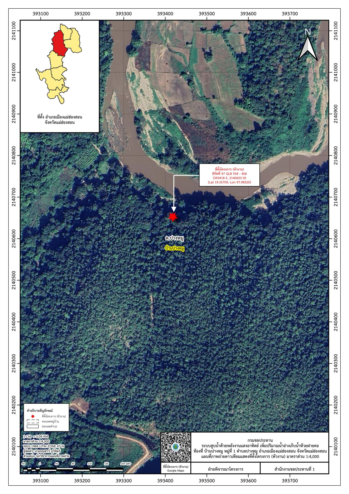
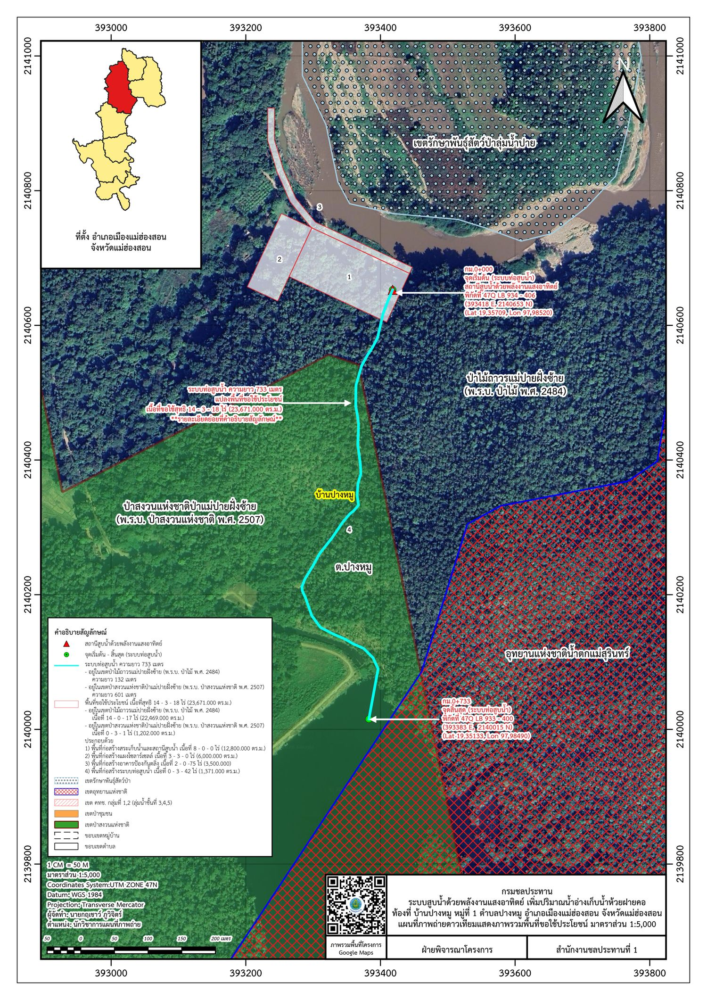
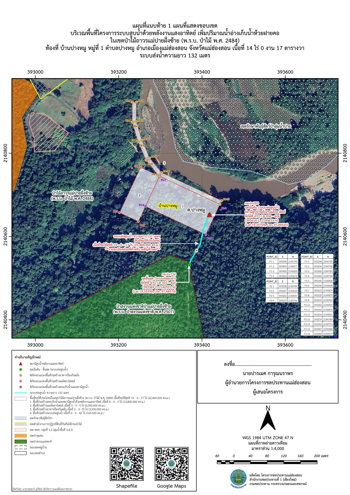
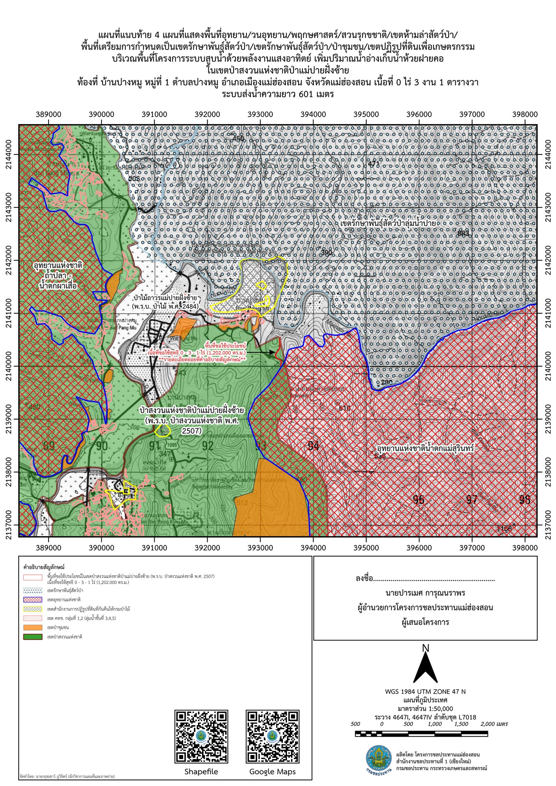
ตรวจสอบและจัดทำแผนที่ขอบเขตพื้นที่โครงการอ่างเก็บน้ำม่อนตะแลง บ้านม่อนตะแลง หมู่ 11 ตำบลผาบ่อง อำเภอเมืองแม่ฮ่องสอน เนื้อที่รวม 355 ไร่ 2 งาน 66 ตารางวา (569,063.568 ตร.ม.) พื้นที่โครงการทับซ้อนกับเขตหน่วยงานถึง 4 ประเภท จึงต้องจำแนกสัดส่วนพื้นที่ทับซ้อนแต่ละเขตให้ชัดเจนก่อนยื่นขออนุญาตใช้พื้นที่ ได้แก่ เขตอุทยานแห่งชาติน้ำตกแม่สุรินทร์ 280-1-99 ไร่ เขตโครงการธนาคารอาหารชุมชนอันเนื่องมาจากพระราชดำริ 54-3-12 ไร่ เขตป่าสงวนแห่งชาติป่าแม่ปายฝั่งซ้าย 18-2-42 ไร่ และเขต คทช. กลุ่มที่ 1,2 (ลุ่มน้ำชั้น 3,4,5) 1-3-16 ไร่
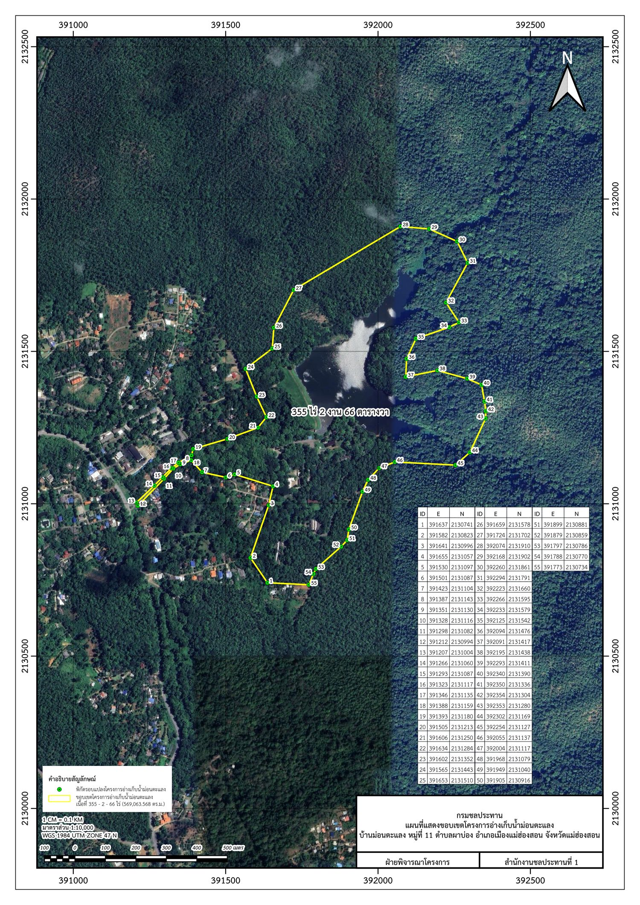
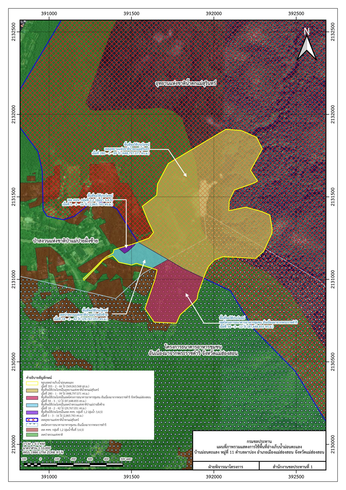
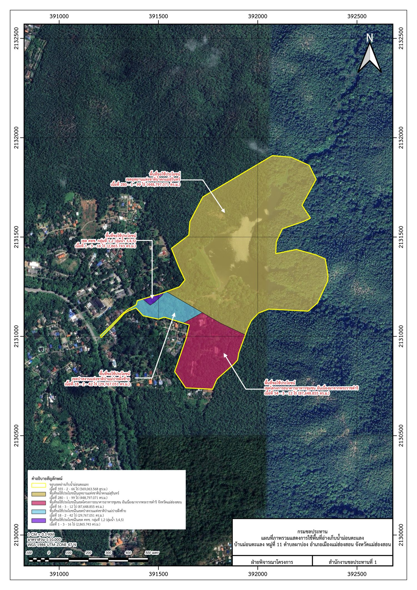
แผนที่ที่จัดทำถูกใช้ประกอบการยื่นขออนุญาตใช้พื้นที่อย่างเป็นทางการ ช่วยให้กระบวนการอนุมัติเป็นไปอย่างถูกต้องตามระเบียบและรวดเร็วขึ้น